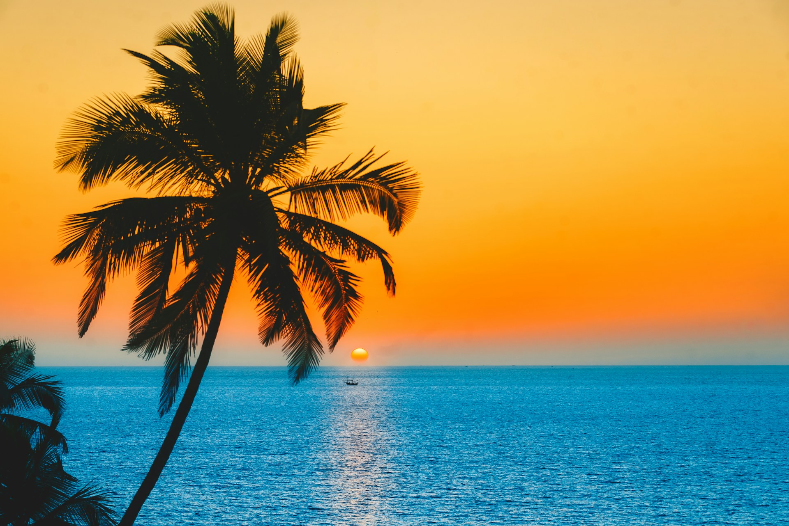
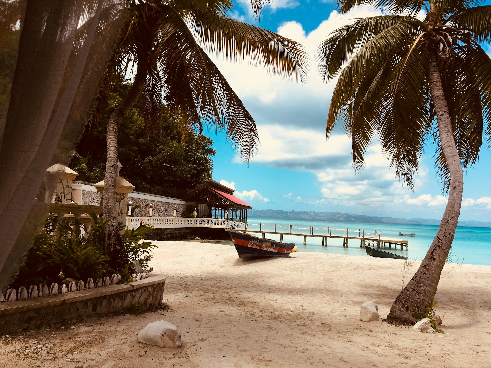
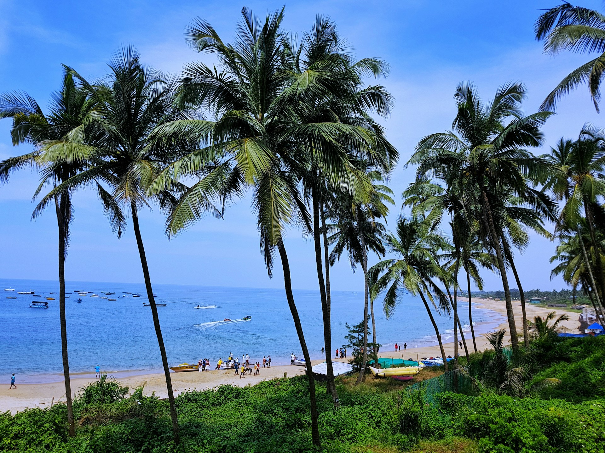

Goa is India’s most popular beach destination, famous for its golden sandy beaches, vibrant nightlife,
Portuguese heritage, and seafood delicacies.
North Goa is known for lively beaches like Baga and Calangute, while South Goa is peaceful with Palolem and Agonda beaches. Goa also offers beautiful churches, forts, and water sports adventures.
North Goa is known for lively beaches like Baga and Calangute, while South Goa is peaceful with Palolem and Agonda beaches. Goa also offers beautiful churches, forts, and water sports adventures.
Location: Goa
Coordinates: 15°29′N 73°49′E





Tips for Visit
- Best season: November–February (pleasant weather & festivals).
- Try Goan seafood dishes like prawn curry and bebinca.
- Rent a scooter for easy travel.
- North Goa for party lovers, South Goa for peace seekers.

Ramesh Kumar
15 yrs guiding in Agra
⭐⭐⭐⭐⭐

mohmd ali
Mughal history specialist
⭐⭐⭐⭐☆

Imran Ali
Speaks English, Hindi, French
⭐⭐⭐⭐⭐

Priya Sharma
Cultural & heritage tours
⭐⭐⭐⭐
Local Services
| NAME | CONTACT |
|---|---|
| Tourist Helpline | +91-832-2424001 |
| Taxi Service | +91-9822123456 |
| Hotel Assistance | +91-832-2412345 |
| Emergency | 100 / 108 |
Nearby Places
| NAME | Location | Highlights |
|---|---|---|
| Fort Aguada | North Goa | Portuguese fort with sea view |
| Dudhsagar Falls | Goa-Karnataka border | Majestic waterfall |
| Basilica of Bom Jesus | Old Goa | UNESCO World Heritage Church |